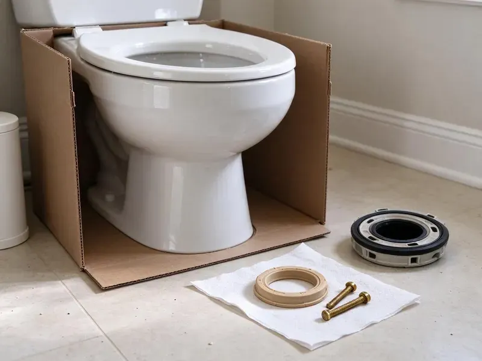

Sink Installation in Green River, WY
Undermount on new stone or a simple drop-in swap, JKV Plumbing handles sink installs all over Green River, WY.
- Leak Checked Before We Leave
- Same-Week Scheduling
- Old Sink Hauled Away
- Licensed & Insured

Local Sink Installers in Green River, WY
Send us the sink model and we will price the install before you order.
Kitchen and Bath Sink Installs in Green River, WY
Swapping a sink is a good time to fix what is behind it. Old shutoffs and galvanized stubs are often worn out, and changing them while the cabinet is empty is cheap. We will point them out. Your call whether to swap them.
Our expertise includes:
- Swap drop-in sinks without recutting the counter
- Install vessel sinks with the matching drain
- Mount faucets and pop-ups before the bowl is set

Additional Bathroom Plumbing Services in Green River, WY
From toilets to showers, our bathroom plumbing team in Green River, WY repairs, installs, and replaces every fixture with clean, code-compliant work.


Customers
Why Choose JKV Plumbing for Sink Installation in Green River, WY?
A sink set by a licensed plumber passes inspection the first time. We size the trap to the fixture, keep the trap arm within the distance allowed to the vent, and use lead-free fittings on every supply connection. Code is the floor.
- Local Expertise, We know the usual drain and stub setups in Green River houses by decade.
- Remodel Friendly, We schedule around your counter and cabinet crews.
- Foundation Integrity, A dry install protects the subfloor and the framing below the sink.
Citywide Coverage
Older homes near the center of town have their own quirks. Their steel or cast iron drain arms rarely match modern sinks, so we carry couplings to tie in new PVC. No forced fits.
Experienced Team
Every install has a licensed plumber on it. Helpers carry and clean, but a licensed plumber makes the drain connections, sets the stops and signs off on the final leak test before we leave. That is not negotiable.
Safety-First Approach
Water gets shut off and tested first. Stops or the main get closed and tested at the faucet, and any stop that leaks gets replaced. We never cut into a live line.
Trusted Certified Green River Plumbing Services Professionals
At JKV Plumbing, we take pride in licensed, certified plumbing services throughout Green River, WY. Credentials matter in this trade. Our plumbers hold recognized industry credentials, and they follow strict safety and quality rules on every repair, installation and maintenance call we run.
Call Us Now PHCC Plumbing Contractor Recognition
PHCC Plumbing Contractor Recognition Better Business Bureau (BBB) Accreditation
Better Business Bureau (BBB) Accreditation Angi Certified Pro
Angi Certified Pro ISO 9001 Quality Management Certification
ISO 9001 Quality Management CertificationHow We Set New Sinks in Green River, WY
Undermount Sink Installation in Green River
Undermount sinks hang from the countertop. The bowl hangs on clips with a full bead of silicone, and it stays braced overnight while the adhesive cures. Glue alone is not enough. Plumbing goes on the next day.

Wall-Mount and ADA Sink Installation in Green River, WY
Wall-hung lavatories need a carrier or heavy blocking. ADA layouts call for a rim at or under 34 inches, open knee space, and insulated pipes below. An offset tailpiece frees up knee room. Lever or sensor faucets finish it off.
Pedestal Sink Installation in Green River, WY
Pedestal sinks hide almost nothing. Since the trap and stops are right behind the column, we center the drain and use chrome parts that look finished. The wall needs solid blocking. The basin hangs from it, not the pedestal.
Bathroom Vanity Sink Installation in Green River, WY
Vanity tops with integrated bowls are the easiest bath install. The top sits on the cabinet in a bead of silicone, the faucet and pop-up go on first, and the trap arm usually needs a small adjustment to meet the new tailpiece. The backsplash gets sealed last. We caulk it to the wall.
Sink Installation Cost Factors in Green River, WY
Labor is the main cost driver. Moving the drain or adding a second bowl adds hours, and a straight drop-in swap is the cheapest. The sink price is separate. You can buy it or we can.
Kitchen Sink Replacement in Green River
Pulling the old kitchen sink is half the job. Old basket strainers fuse to the bowl, the disposal has to come off its mounting ring, and the dishwasher drain hose needs to be rerouted to the new disposal or tailpiece with a high loop. After that, the new bowl goes in. We reuse the disposal if it still runs well.
Leak-Proof Sink Connections in Green River, WY
Every joint gets tested before we leave. We fill the bowl to the overflow, pull the stopper, and watch every nut under the cabinet at full flow with a flashlight and a dry paper towel. Paper towels catch the smallest drip. Pipe dope goes on threads, not compression fittings.

Sink Replacement and Upgrades in Green River
Upgrading the sink is a cheap way to refresh a room. A same-size drop-in swap usually takes a morning, and a deeper bowl may only need a new trap. Countertop changes add time. We tell you which one you are looking at.
Sink Installation Near Me in Green River, WY
Our trucks work in Green River every week. Short drives mean tight arrival windows, and we know which nearby supply houses carry your sink. We grab parts on the way over.
Searching sink installation near me in Green River turns up a lot of handymen. A licensed plumber sets the sink, connects the drain to code and replaces the stops if they are worn, so the install passes inspection and the cabinet stays dry. That difference shows up later.
JKV Plumbing at a Glance
- Licensed and insured plumbers serving Green River, WY
- 24/7 emergency service with same-day scheduling
- Clear written estimates, no hidden fees
- 4.9-star rated by 782+ Wyoming customers
Green River Map
Green River Information
- Population
- 11,496
- Area codes
- Local
- Service area
- Green River and towns within a 40 mile drive
- Nearby
- Rock Springs, Evanston, Lander, Rawlins
A water softener or filtration system is a common upgrade for Wyoming homeowners dealing with scale and staining. A sink in Green River, WY lasts longer when every joint is snug and supported, so we set it without strain on the trap or the supply lines.
Expert Services
Reach out to JKV Plumbing for honest, reliable plumbing from people who know the trade in Green River, WY.
Our Specialized Plumbing Services in Green River, WY
At JKV Plumbing, we handle the full list of plumbing services across Green River, WY. From leak detection to full system installs, our team works fast and charges fair prices on homes and commercial properties alike. Here are the core services we offer:


How a Sink Install Goes in Green River, WY
No surprises on install day. Here is the plan we follow.
Request a Quote
Call (307) 393-4049 and tell us the sink style. You get a flat price.
Remove and Prep
We pull the old sink, protect the open lines and replace worn stops.
Install and Test
The new sink is set, sealed and plumbed, then tested with a full bowl.
Frequently Asked Questions About Sink Installation in Green River
Labor for most sink installs runs $200 to $600. A drop-in in the same cutout sits near the low end, while an undermount on stone or any job that changes the existing plumbing lands closer to the top of that range. That price does not include the sink.
Often, if it is in good shape. A faucet that still seals and fits the mounting holes in the new sink can be moved over with new supply lines and a fresh gasket, which saves the cost of a new one. Old cartridges may need rebuilding.
Two layers of coverage. Our written labor warranty covers leaks and loose mounting from our work, while the sink and faucet makers cover defects in the fixtures, and some faucet brands cover finish and cartridges for life. Register the faucet online.
Start with the faucet. The number of holes in the sink or counter has to match the faucet you want, and a vessel bowl needs a taller or wall-mounted faucet, so picking the faucet first saves a return trip to the store. Bowl depth matters next.
A vanity top swap is a fair weekend project. Lining up the trap and sealing the flange are where DIY installs go wrong. If it drips, we can fix it.
Our labor is warrantied in writing. Leaks or loose clips from our work get fixed free during the warranty term printed on your invoice. Fixtures carry the maker's warranty.
Either works for us. You can buy it yourself or we can get it from our supply house at contractor pricing. Supplied parts carry our warranty too.
Drop-in sinks are ready the same day. Undermounts need the silicone to cure for about a day before the bowl holds weight, so we come back to connect the plumbing and you can use it right after the leak test. One evening without it is typical.
What People Are Saying About Our Plumbing Experts?

Karen W.
After our third pinhole leak in copper, we stopped patching. JKV Plumbing gave us a written plan room by room and repiped the house in PEX while we stayed in it. The crew covered our floors every morning and cleaned up every night.
Repiping · Green River, WY
Megan L.
Our upstairs tub drained so slowly that every shower turned into a bath. JKV Plumbing pulled a wad of hair out of the stopper and then snaked the line past the trap. Three months later it still drains fast.
Drain Cleaning · Rawlins, WY
Nathan E.
Our tankless heater kept throwing an error code and shutting off mid shower. The tech flushed the heat exchanger, which was full of scale, and replaced a bad flow sensor. Hot water has been steady for half a year now.
Water Heater Repair · Rock Springs, WYAngela D.
Our sump pump quit during a storm and the water was an inch from the basement carpet. JKV Plumbing put in a new pump with a battery backup that same evening. We have had two heavy rains since. It kicked on both times.
Sump Pump · Jackson, WY
Kevin O.
Before buying our house I paid for a sewer camera inspection. JKV Plumbing found a belly in the line that held standing water about forty feet from the cleanout. We used the video to get the sellers to fix it before closing.
Sewer Camera Inspection · Green River, WY
Mark T.
The floor drain in our office break room backed up every few weeks. The plumber ran a cable, then put a camera down and found roots at a joint about thirty feet out. Seeing it on the screen made the decision easy.
Drain Cleaning · Lander, WY